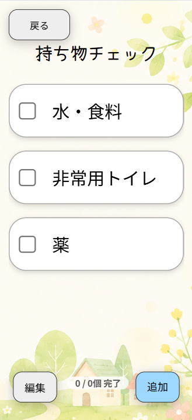

持ち物チェック
災害時に必要な持ち物を確認できます。
準備できたもののチェックボタンを押して、
準備状況を確認できます。

使い方
① 準備できた持ち物の「□」を押します。
② 「追加」から新しい持ち物を登録できます。
③ 「編集」から不要な項目を削除できます。
④ 「戻る」を押すと、ホーム画面に戻ります。
災害時に安心して利用できるよう、
4つの機能をご紹介します。
災害時に必要な持ち物を確認できます。
準備できたもののチェックボタンを押して、
準備状況を確認できます。

① 準備できた持ち物の「□」を押します。
② 「追加」から新しい持ち物を登録できます。
③ 「編集」から不要な項目を削除できます。
④ 「戻る」を押すと、ホーム画面に戻ります。
災害が起きたとき、自分の状況を
登録している連絡先に知らせることができます。

自分の状況をよく確認してから、
「無事です」または「危険です」を押してください。
ボタンを押すと、登録している
メールアドレスへ自動で送信されます。
① 自分の現在の状況を確認します。
② 「無事です」または「危険です」を押します。
③ 登録しているメールアドレスへ自動で送信されます。
④ 「戻る」を押すと、ホーム画面に戻ります。
登録している家族などの
連絡先を確認できます。
最初に登録した連絡先や、
「連絡先登録」から追加した連絡先が表示されます。

① 登録されている名前やメールアドレスを確認できます。
② 登録件数が多い場合は、下にスクロールして確認できます。
③ 不要になった連絡先は「×」を押して削除できます。
④ 「ホームへ戻る」を押すと、ホーム画面に戻ります。
家族などの連絡先を
新しく登録できます。

① 「名前」に登録する人の名前を入力します。
② 「メールアドレス」にメールアドレスを入力します。
③ 「登録」を押すと、連絡先が登録されます。
④ 「ホームに戻る」を押すと、ホーム画面に戻ります。